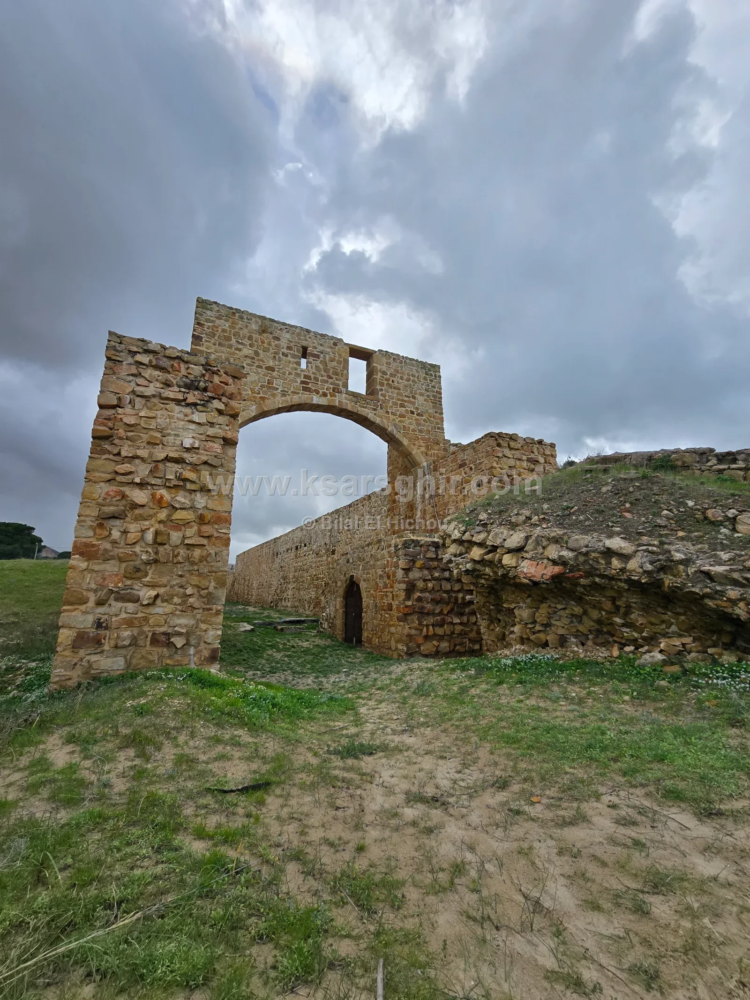

🏖️ Playas
Yacimiento arqueológico de Alcazarseguer: ciudad meriní circular en el Estrecho de Gibraltar, punto de paso hacia al-Ándalus, portuguesa de 1458 a 1550, sacada a la luz por excavaciones marroco-estadounidenses entre 1972 y 1981.

Junto a la playa de Alcazarseguer se encuentran los restos de una ciudad islámica de forma circular que fue durante siglos la puerta hacia al-Ándalus. Conocida como Qasr Masmuda y Qasr al-Majaz, prosperó con los meriníes y fue ocupada por los portugueses de 1458 a 1550. El yacimiento está abierto a los visitantes y cuenta, en una sola visita, la historia del Estrecho y sus dos orillas.
El yacimiento está junto a la playa principal de Alcazarseguer, en la costa del Estrecho de Gibraltar entre Tánger y Fnideq. Pertenece al municipio de Ksar El Majaz, provincia de Fahs-Anjra, aunque está en pleno Alcazarseguer. Desde la playa se llega a pie en pocos minutos, así que mar e historia se combinan fácilmente en el mismo día.
Los alrededores del yacimiento estuvieron habitados ya en época romana, y algunos investigadores creen que el lugar es la «Exilissa» citada por las fuentes antiguas en la costa del Estrecho. Pero la verdadera importancia del sitio comienza en época islámica, con el nombre de Qasr Masmuda y después Qasr al-Majaz, «el castillo del paso», nombre del que hoy toma el suyo el municipio de Ksar El Majaz.
Desde aquí cruzaban los barcos a la otra orilla: Alcazarseguer fue base de paso de los ejércitos hacia al-Ándalus con almorávides, almohades y meriníes, y centro de comercio con el reino de Granada.
Lo que más distingue a Alcazarseguer es su forma circular: una ciudad rodeada por una muralla redonda con torres y puertas, un trazado poco común entre las ciudades de Marruecos. Con los meriníes la ciudad alcanzó su apogeo, y las excavaciones sacaron a la luz una mezquita, un baño y un centro comercial de los siglos XII al XIV, testigos de la grandeza meriní y del papel de Alcazarseguer en el Estrecho.
En 1458 el ejército portugués al mando de Alfonso V tomó Alcazarseguer y permitió a los musulmanes salir con sus bienes. Fue la segunda ciudad marroquí ocupada por Portugal, tras Ceuta en 1415 y el intento fallido sobre Tánger en 1437.
Los portugueses transformaron la ciudad islámica:
Los portugueses permanecieron en Alcazarseguer unos 90 años, hasta abandonarla en 1550.
Entre 1972 y 1981 una misión marroco-estadounidense dirigida por el arqueólogo Charles L. Redman realizó amplias excavaciones, a propuesta del Ministerio de Cultura de Marruecos. Bajo los niveles portugueses salió a la luz una sucesión de ciudades islámicas, junto con molinos, almacenes, hornos y prensas. Se recuperaron cientos de miles de objetos: cerámica, herramientas, armas, joyas, monedas y vidrio, que iluminan la vida cotidiana y el comercio entre las dos orillas. Participaron trabajadores de los aduares cercanos, y muchos se convirtieron en hábiles artesanos del trabajo arqueológico.
La mejor luz para fotos es a primera hora y antes del atardecer, cuando las murallas toman un tono dorado con el Estrecho al fondo.
Junto a la playa principal de Alcazarseguer; pertenece al municipio de Ksar El Majaz, provincia de Fahs-Anjra.
Sí, el yacimiento está abierto a los visitantes.
Su raro trazado circular y su papel como base de paso hacia al-Ándalus y de comercio con Granada.
De 1458 a 1550, unos 90 años.
Una misión marroco-estadounidense dirigida por Charles L. Redman, entre 1972 y 1981.
Porque «Qasr al-Majaz» es uno de los nombres históricos de Alcazarseguer: el castillo del paso hacia al-Ándalus.